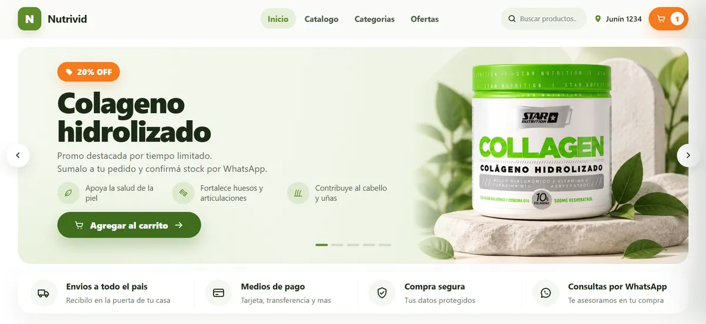
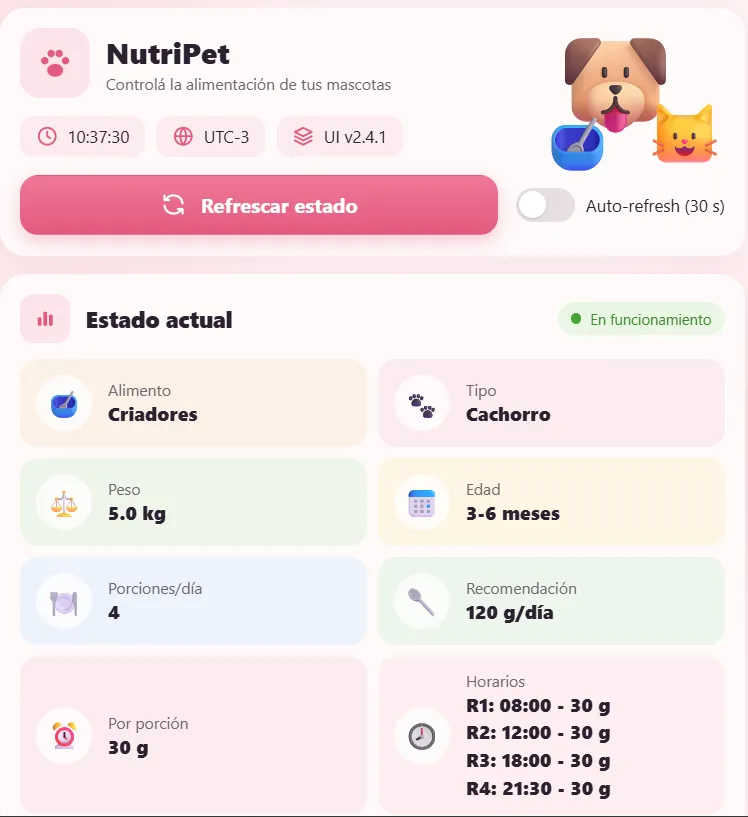
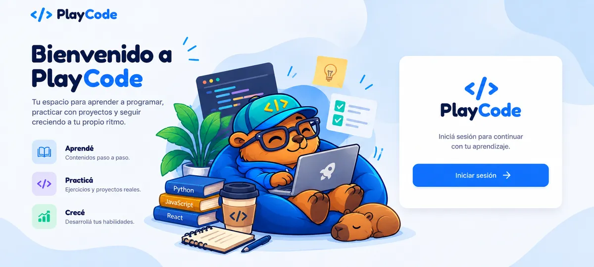

Tienda online
Capricho
Tienda online inspirada en un emprendimiento gastronómico, con catálogo de productos, pedidos por WhatsApp y panel de administración.
Desarrolladora de software
Tiendas online, sistemas de turnos y hasta un dispensador para mascotas que programé desde la placa.
Proyectos completos, de la base de datos a la interfaz. Varios están inspirados en emprendimientos reales de Corrientes.
Tienda online inspirada en un emprendimiento gastronómico, con catálogo de productos, pedidos por WhatsApp y panel de administración.

Tienda online pensada para una dietética con varias sucursales, para consultar productos y hacer pedidos de forma rápida y sencilla.
Sitio para un estudio de uñas con gestor de turnos: las clientas reservan, cancelan y reciben recordatorios, y la profesional administra su agenda desde un panel privado.
Proyecto académico basado en ESP8266 que integra hardware, firmware e interfaz web embebida, diseñado para calcular y dispensar porciones de alimento de manera automática y precisa.

Sistema de gestión académica para cursos, estudiantes, profesores, asistencias y entregables.

Aplicación web tipo playground para practicar código, con ejercicios y validación en tiempo real.
Mi stack, tecla por tecla. Pasá el mouse o tocá una para ver dónde la usé.
Estoy terminando la Tecnicatura Superior en Desarrollo de Software. Arranqué por el lado menos esperado: en primer año programé un dispensador de comida para mascotas, con placa, firmware y su propia interfaz. Este año me metí de lleno en la web e hice tiendas online, un sistema de turnos y una plataforma educativa.
Con cada trabajo me pasa lo mismo: la consigna es el punto de partida, no el final. Siempre termino sumando funciones que no me pidieron, cuidando el diseño y buscando la vuelta para que quede lo mejor posible. Me gusta que cada proyecto tenga algo mío.
# sobre_mi.py
class Antonella:
ubicacion = "Corrientes, Argentina"
stack_favorito = ["Django", "React", "TypeScript"]
# culpa de NutriPet:
tambien_hablo = ["C/C++", "ESP8266"]
combustible = ["café", "tereré"] # según el calor
def hacer_proyecto(self, consigna):
return consigna + ideas_propias # siempre
Abierta a propuestas
Si tenés alguna propuesta, consulta o simplemente querés charlar sobre un proyecto, podés escribirme.